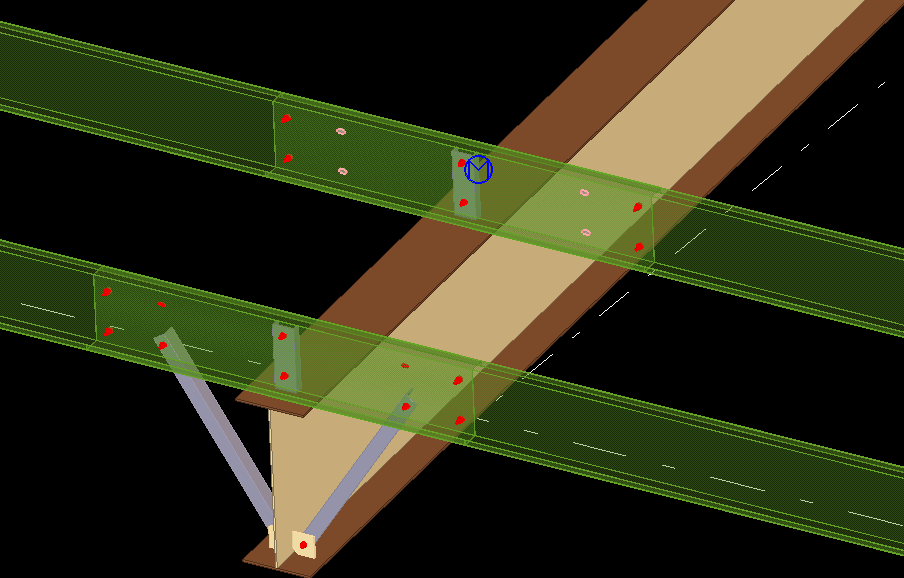
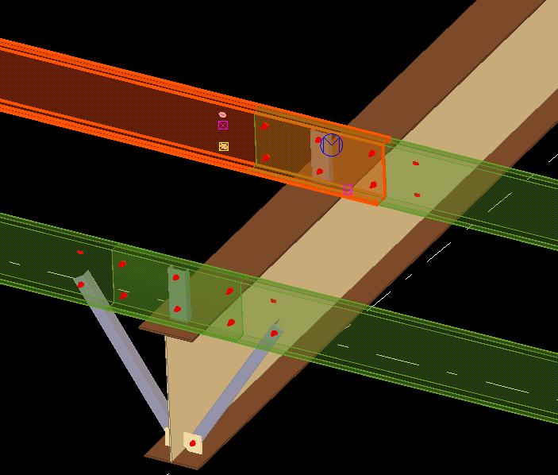
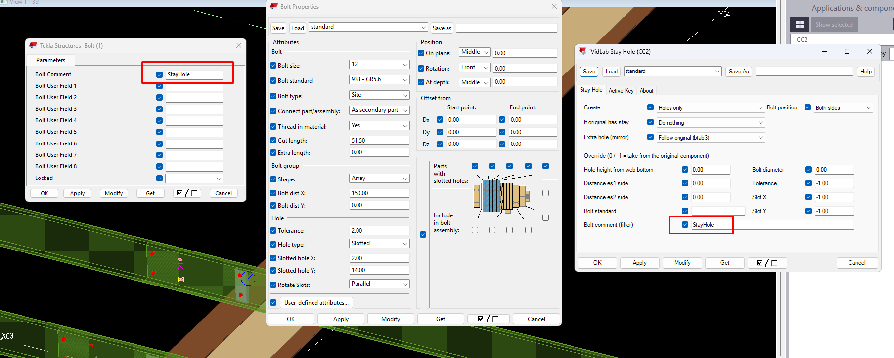
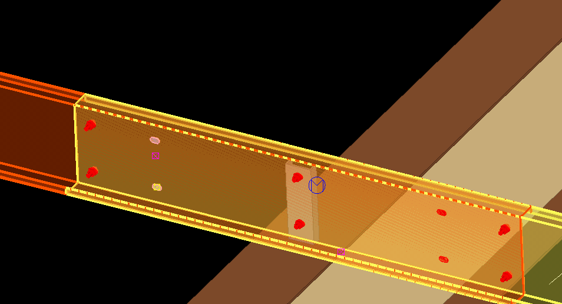

CC2 - Stay Hole: Lỗ module chống xà gồ nhanh - chuẩn xác - dễ kiểm soát
Cập nhật và vá lỗi cho các trường hợp chống lệch, chống nằm ngoài vùng lap; bổ sung Bolt comment để kiểm soát các lỗ module đã được thêm.
Tóm tắt nhanh
- Vá lỗi cho các trường hợp chống lệch và chống nằm ngoài vùng lap.
- Bolt comment: gắn nhãn cho các lỗ module đã thêm để lọc và kiểm soát.

1. Cập nhật và vá lỗi
Bản 1.21P vá lỗi cho các trường hợp chống lệch và chống nằm ngoài vùng lap, để lỗ module được tạo thêm đúng chỗ trên xà gồ.

2. Bolt comment: kiểm soát các lỗ module đã thêm
Ô Bolt comment trong hộp thoại CC2: chuỗi bạn nhập được gán vào thuộc tính Bolt Comment của mọi cụm bu-lông do Stay Hole tạo. Nhờ vậy bạn lọc và chọn được riêng các lỗ module đã thêm trong model.


3. Kích hoạt miễn phí, 180 ngày
Stay Hole (CC2) miễn phí, kích hoạt bằng cách gửi Product Key (bấm Copy trong hộp thoại License) tới ividlab.com@gmail.com để nhận Active Key; dùng được 180 ngày rồi kích hoạt lại. Hướng dẫn chi tiết và hỏi đáp: bài giới thiệu Stay Hole (CC2).
4. Cách nâng cấp
- Ở mục Tải về bên dưới, tải gói
iVidLab.StayHole_1.21P.tsep. - Nếu đã cài bản cũ, gỡ bản cũ trong Tekla Extension Manager trước.
- Nhấp đúp file
.tsep, tick phiên bản Tekla rồi bấm Import. Gói được cài khi Tekla khởi động lần tiếp theo.
CC2 - Stay Hole: Fast, accurate, easy-to-control stay-bolt holes for purlins
Updates and fixes for misplaced stays and stays outside the lap zone; adds Bolt comment so you can control the module holes that were added.
At a glance
- Fixes for misplaced stays and stays outside the lap zone.
- Bolt comment: tags the module holes that were added so you can filter and control them.
1. Updates and fixes
Version 1.21P fixes the cases of misplaced stays and stays outside the lap zone, so the added module holes land in the right place on the purlin.
2. Bolt comment: control the module holes you added
The Bolt comment box in the CC2 dialog: the text you enter is assigned to the Bolt Comment attribute of every bolt group Stay Hole creates. That lets you filter and select just the module holes that were added to the model.
3. Free activation, 180 days
Stay Hole (CC2) is free: activate by sending the Product Key (click Copy in the License dialog) to ividlab.com@gmail.com to receive an Active Key; it works for 180 days and then you activate again. Details and FAQ: the Stay Hole (CC2) overview.
4. How to upgrade
- In the Download section below, get
iVidLab.StayHole_1.21P.tsep. - If an older version is installed, uninstall it in Tekla Extension Manager first.
- Double-click the
.tsepfile, tick your Tekla version and click Import. It is installed the next time Tekla starts.
Tải vềDownload

Nhóm Zalo người dùng iViDLabiViDLab user group on Zalo
Quét mã QR hoặc bấm nút bên cạnh để vào nhóm: hỏi đáp khi sử dụng, báo lỗi và nhận thông báo bản cập nhật mới.
Scan the QR code or use the button to join the group: usage questions, bug reports and new release announcements.
Liên hệ iViDLabContact iViDLab
Theo dõi fanpage Facebook hoặc gửi email để được hỗ trợ và góp ý.
Follow the Facebook page or send an email for support and feedback.